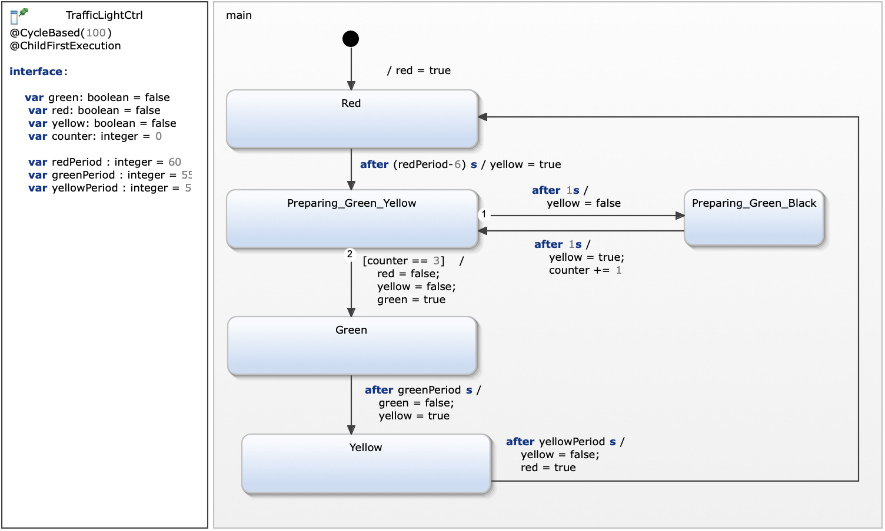

You added a variables to the statechart and used guard conditions on transitions. The result should be comparable to the follwing statechart...

First the model only defines variables. The different light colors is represented by boolean variables.
| requirement | modelling approach |
|---|---|
| R6: In the last 6 seconds of red being on, the light prepares to go to green by blinking its yellow light (1s on, 1s off) in addition to its red light being on. | There are two additional states for the preparation phase which are used to define yellow blinking by toggeling the states cyclicly. |
| R7: The time period of the different phases should be configurable. | Variables greenPeriod, redPeriod, and yellowPeriod are defined. These variables are used within the after trigger specification. |